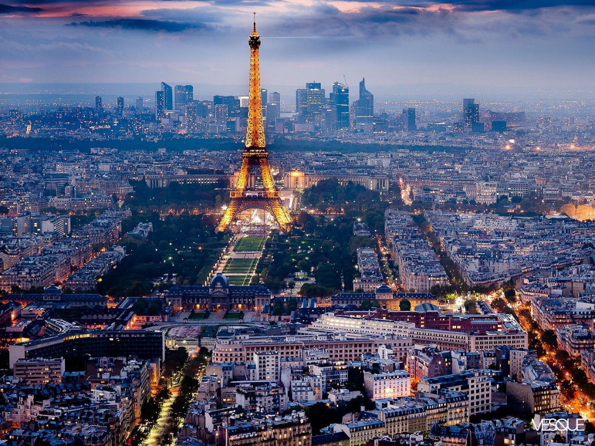
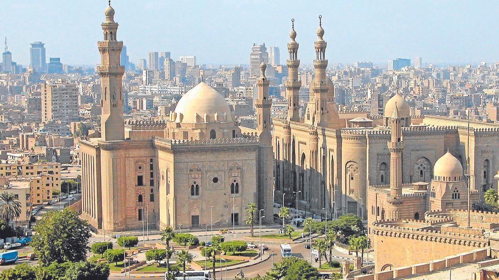

Viatge a Francia
Des de que vaig ser petit, sempre havia somiat amb visitar París. Aquesta ciutat, amb la seva rica història i cultura, sempre m'havia fascinat. Finalment, va arribar el moment de fer realitat aquest somni. Vaig agafar un vol cap a la "Ciutat de la Llum" amb una emoció indescriptible. Arribant a París, el primer que vaig notar va ser l'encantadora arquitectura que defineix la ciutat. Cada carrer, cada edifici, tenia la seva pròpia història, el seu propi caràcter.
Viatge a Egipte
Visitar Egipte va ser una aventura com cap altra. Des del moment que vaig arribar, em vaig sentir immers en un món d'història i misteri. La visita a les majestuoses piràmides de Giza va ser, sens dubte, el punt culminant. Contemplant aquestes antigues meravelles, vaig sentir com si hagués viatjat en el temps. També vaig tenir l'oportunitat de navegar pel riu Nil, una experiència tranquil·la i bella, veient de prop la vida a les seves ribes. El viatge no estaria complet sense explorar el fascinant Museu Egipci al Caire, on vaig quedar captivat per les riqueses del faraó Tutankhamon. La cultura, la gent i els paisatges d'Egipte van deixar una empremta inesborrable en mi, una experiència realment enriquidora.